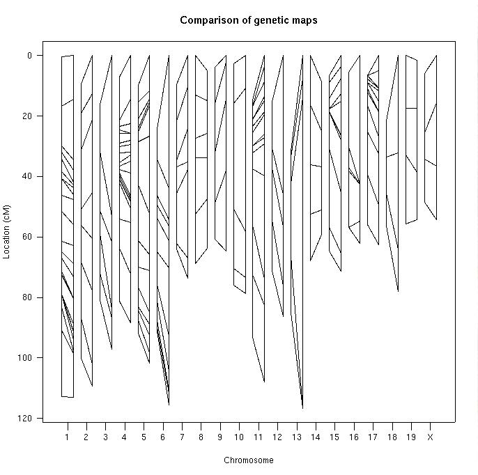

[ Home | Download | FAQ | News | Bugs | Sample data | Tutorials | Book | Manual | Citation ]
Side-by-side comparison of two genetic maps. This can be useful for comparing the genetic map obtained from a database to that estimated with the observed data.

[ Home | Download | FAQ | News | Bugs | Sample data | Tutorials | Book | Manual | Citation ]